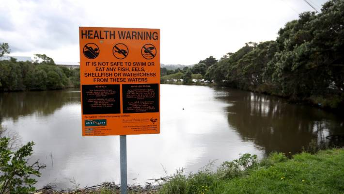

We can’t live without water. It’s very important that the water we drink is clean and safe. We also use water to clean ourselves, our clothes and our homes.
In New Zealand cities and towns, clean water is pumped straight into our homes. Water is one of the most important resource to the people of New Zealand. We need to protect our future and keep our waters clean and safe.
In New Zealand cities and towns, clean water is pumped straight into our homes. Water is one of the most important resource to the people of New Zealand. We need to protect our future and keep our waters clean and safe.